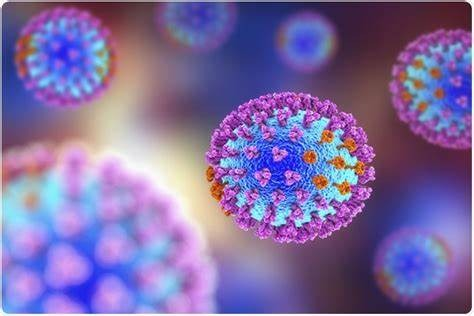

Predominant Virus

During the flu season, Influenza A (H1N1)pdm09 initially emerged as the most common virus circulating among the population. This strain, known for its significant impact during past flu seasons, continued to be a major concern for health officials. Its prevalence early in the season led to increased vigilance and preventive measures to mitigate its spread and protect vulnerable groups.
As the season progressed, the dynamics of virus circulation began to shift. Influenza A (H3N2) and B/Victoria viruses started to become more prevalent. These strains brought their own challenges, with H3N2 often associated with more severe illness in older adults and B/Victoria affecting younger populations. The changing landscape of predominant viruses required adjustments in public health strategies and vaccination efforts to address the evolving threat.
Throughout this period, the Centers for Disease Control and Prevention (CDC) played a crucial role in monitoring the spread and impact of these viruses. By closely tracking infection rates, hospitalizations, and the effectiveness of vaccines, the CDC provided essential data to guide public health responses. Their ongoing surveillance and research efforts are vital in managing the flu season and preparing for future outbreaks, ensuring that health systems remain resilient and communities stay informed and protected.